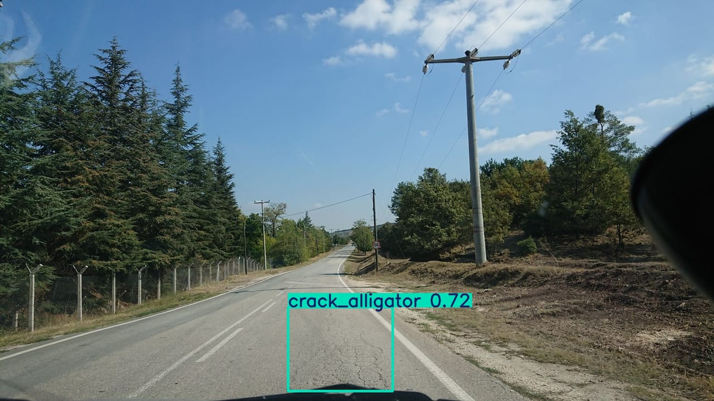
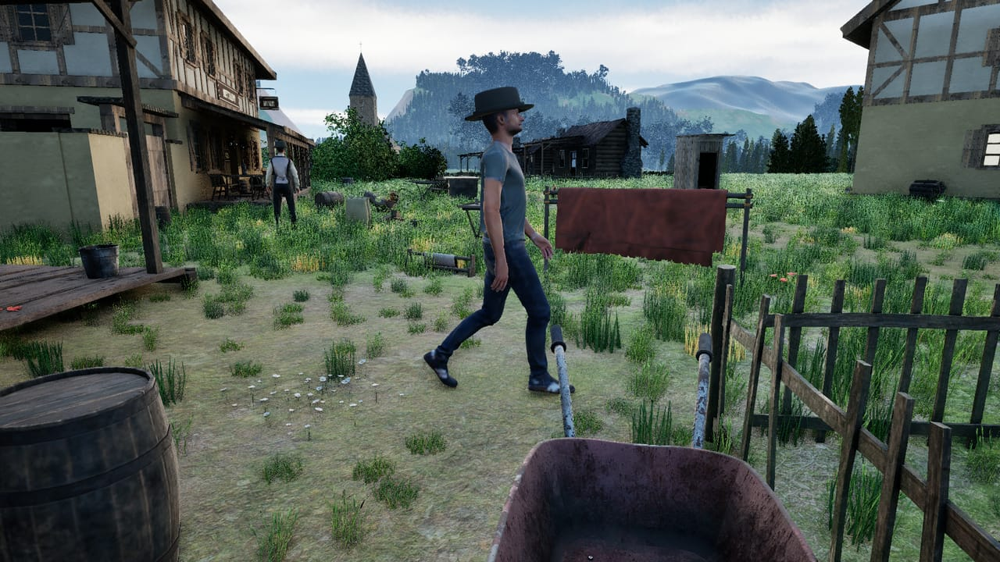
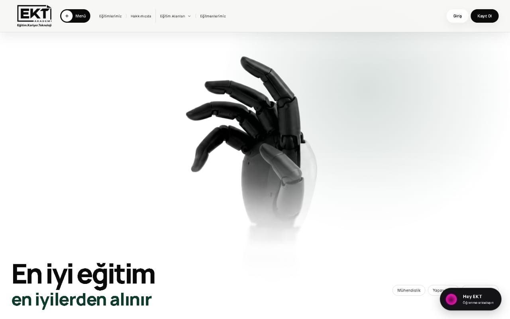
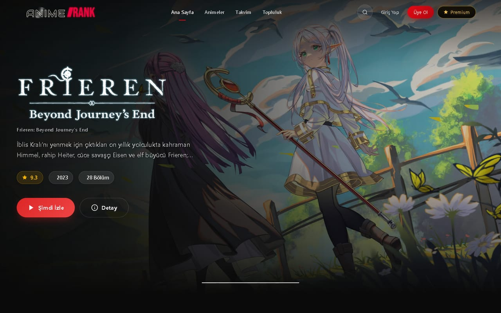
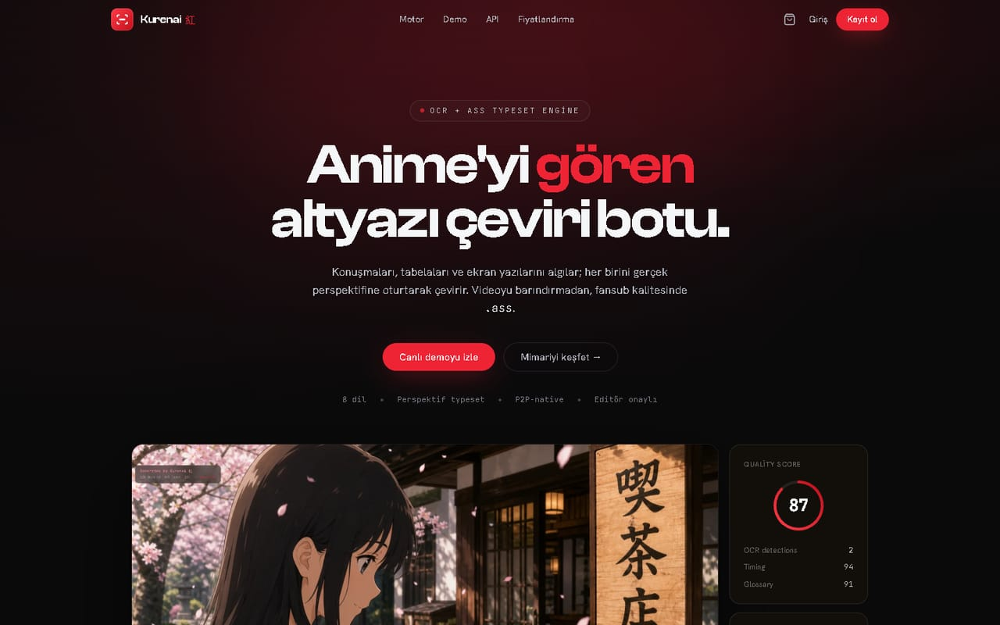
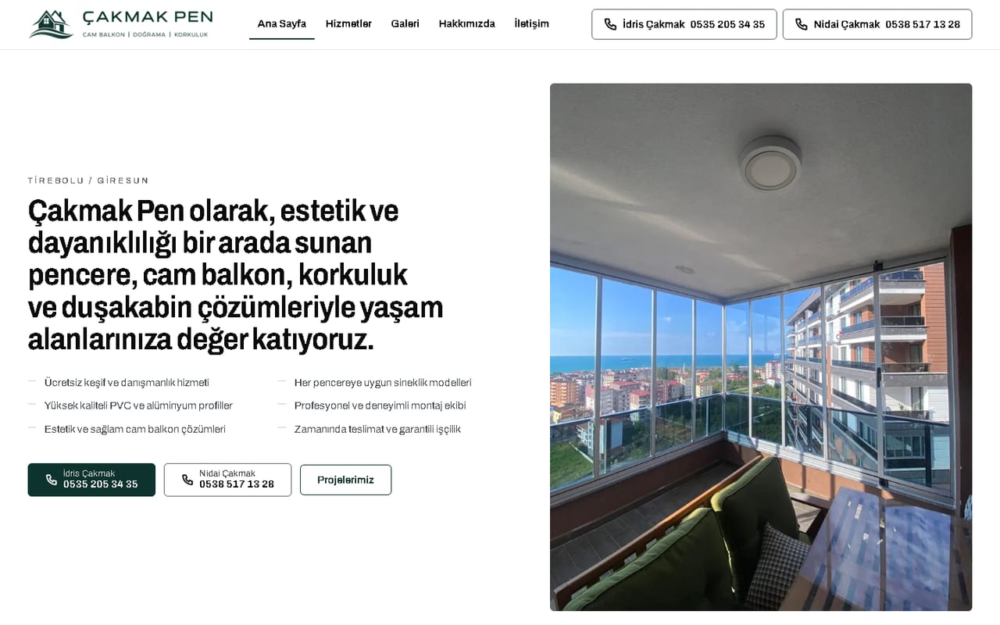
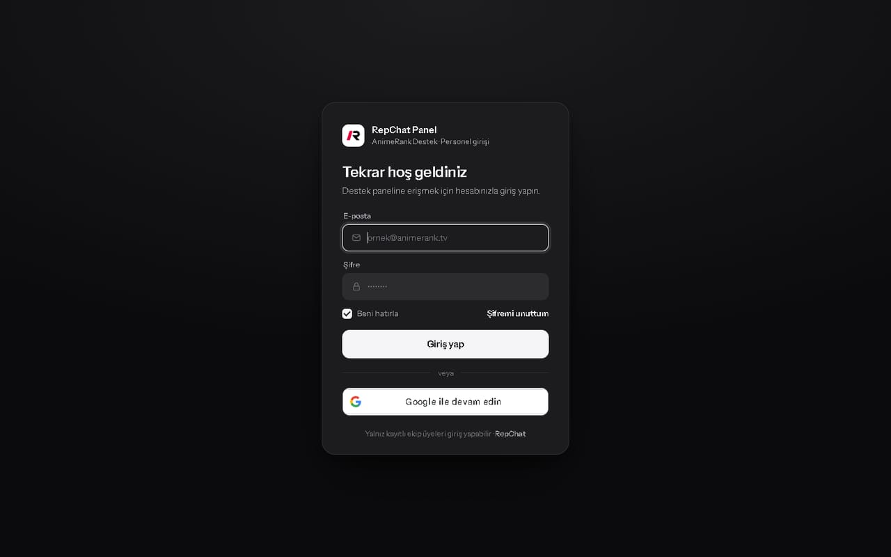

Hover to inspectRoad-damage detection from bus-mounted cameras.
Backend Developer AI & computer vision

BÇProfile record
I build backends that hold up in production, computer-vision pipelines that turn camera footage into maps, and gameplay systems in C++. Live work includes an education platform, corporate sites and a video platform.
Every system I build has a moment where something has to be trusted: an agent's approval, a camera frame, a payment. I design that moment first, and I write down what is still unfinished.
Approval travels through the protocol and the server verifies it. The agent's own confirm flag carries no weight.
A missing token, a silent endpoint or an unreadable answer ends in refusal. A gate opens only when it can see.
A privacy rule that can be forgotten will be. Asfalya rejects unmasked frames with an exception instead of relying on a checklist.
Every repository carries a status table with its open items: a recall target missed, a link that is simulation only, a legal permission folder that is still empty.
Select a project for its purpose, screens and technical stack.

Hover to inspectRoad-damage detection from bus-mounted cameras.

Open-world survival game in Unreal Engine 5 and C++.

Education platform in production.

Video platform for anime with a searchable catalogue, season calendar, multi-language subtitles and a hybrid P2P and server player. I work on the backend, the media pipeline and the servers.

Anime subtitle translation service. Produces .ass subtitles without touching the video: audio timing, OCR of on-screen text and context-aware translation across eight languages.

Corporate site for a glass-balcony and joinery company, built as a static multi-page site with no build step: 23 pages, design tokens from the brand guide, measured WCAG contrast, JSON-LD and a sitemap.

Live support built around the conversation: an Express and Socket.IO gateway, a 5 KB widget loader with an iframe UI, an operator inbox with a visitor card and end-to-end tests.
Honey e-commerce site on TanStack Start and Cloudflare with D1 and KV, Turnstile bot protection, card payments and a local workflow that never touches production data.
1Backend development
2AI & vision
3Game development
4Data & caching
5Media pipelines
6Delivery
Node.js and Python services, REST and GraphQL APIs, PostgreSQL, MongoDB and Redis, tuned until the queries are fast and the servers stay calm under load.
YOLO pipelines, GPS map-matching, speech timing, OCR and LLM tooling, with privacy rules enforced in code.
Gameplay systems in Unreal Engine 5 and C++, built data-driven and covered by automation tests from the first milestone.
Backends and websites for clients, from first commit to production: EKT Akademi, Çakmak Pen and Bal Defteri.
Anadolu University Computer Research and Application Centre. Built and presented Asfalya, the road-damage detection system.
Associate degree, Back-End Software Development.
Backend development, database systems, API design, microservice architectures and modern software practice, studied alongside building and shipping the projects above.
Public, so you can read the code.
Network-verified trust for AI agents that spend money.
An MCP server that runs real Google Ads and Meta campaigns behind server-side spending guards. Before a human is ever prompted, it asks the mobile network (GSMA Open Gateway and CAMARA, through Nokia Network-as-Code) whether the approver's line has been taken over.
The agent's own confirm flag is ignored on every path. Approval is a fact the server verifies.
The trust chain, and where it honestly stands
| # | Signal | Question it answers | State |
|---|---|---|---|
| 1 | simSwap.check | Was the approver's line taken over recently? | Live |
| 2 | numberVerification | Is the approval coming from the owner's own device? | Simulation only |
| 3 | deviceStatus.reachability | Can the line receive data or SMS right now? | Live |
| 4 | deviceStatus.roaming | Is the line in the expected country? | Live |
| 5 | deviceSwap.check | Was the line moved to a new device? | Live |
| 6 | callForwarding | Is unconditional call forwarding active? | Live |
Five of six links are verified against live endpoints. The account runs in Nokia's Simulator mode: the wire is proven, the operator integration is still pending. Number Verification is a device-side OIDC flow that no back end can call.
Open-source MCP server for safety-gated Google Ads management. An AI agent can manage campaigns while every budget increase waits for a verified human approval.
Pull requests to projects maintained by other teams.
microsoft/vscode #329128
The arrow-key and Escape handling repeated in FindInput and ReplaceInput now lives in one shared helper, covered by five new unit tests. Resolves issue #199892.
nasa/openmct #8393
A fix for NASA's mission-control framework: the plot view refreshes its Y-axis label as soon as the label changes.
I want to build scalable products in AI, big data, media technology and games that can compete internationally. If that overlaps with what you are working on, write to me.